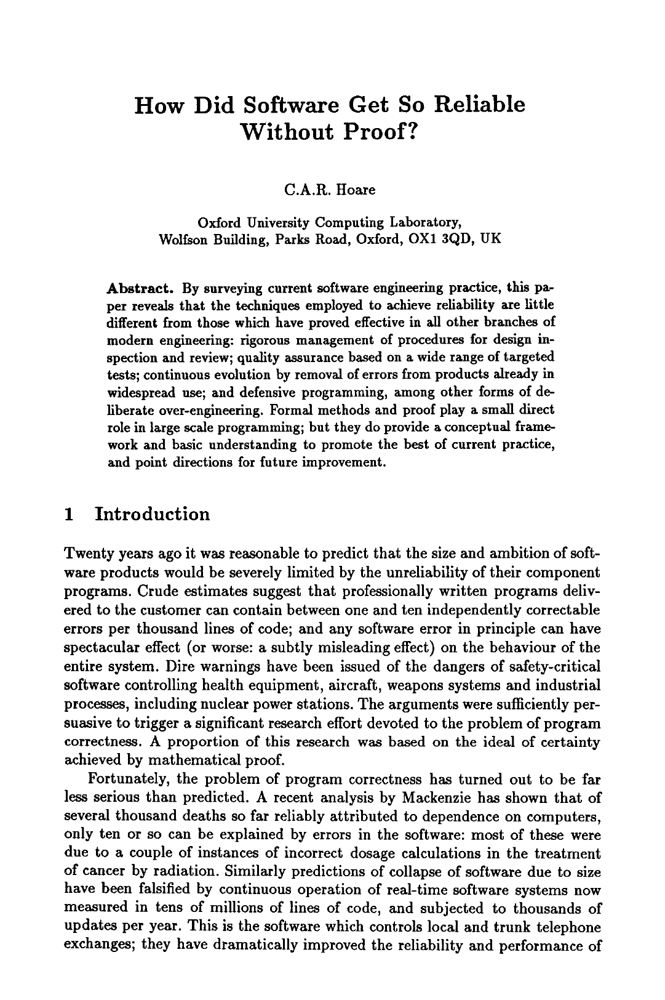
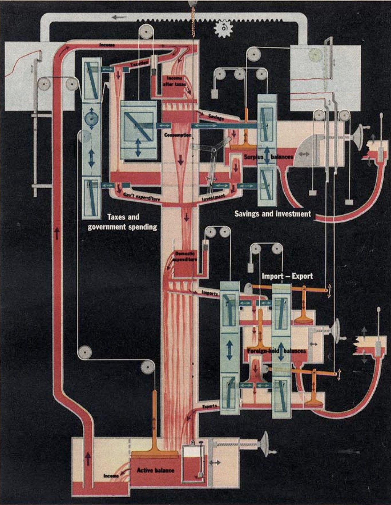
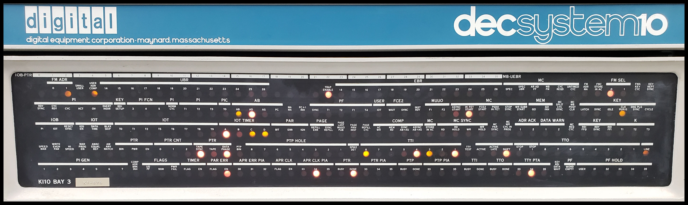
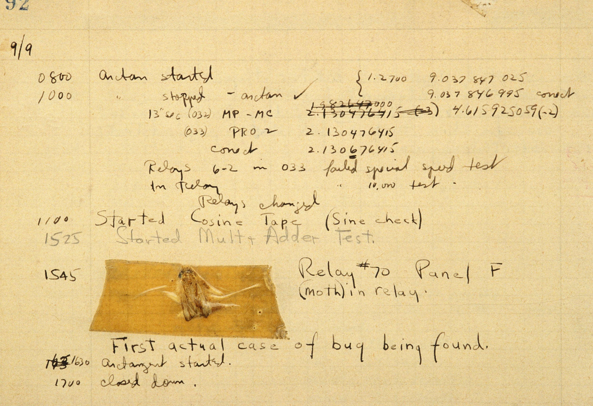
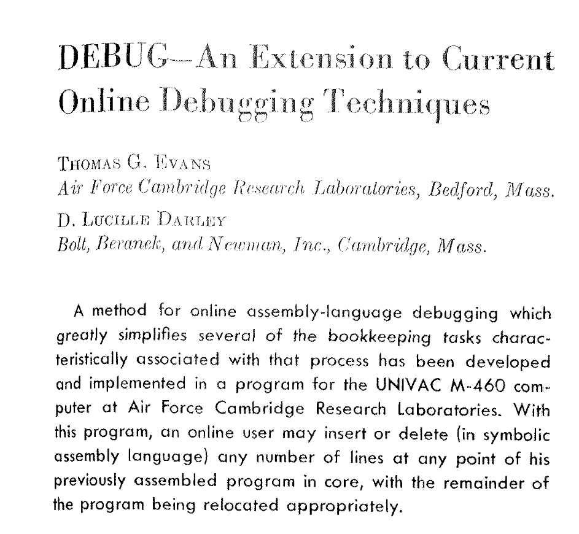
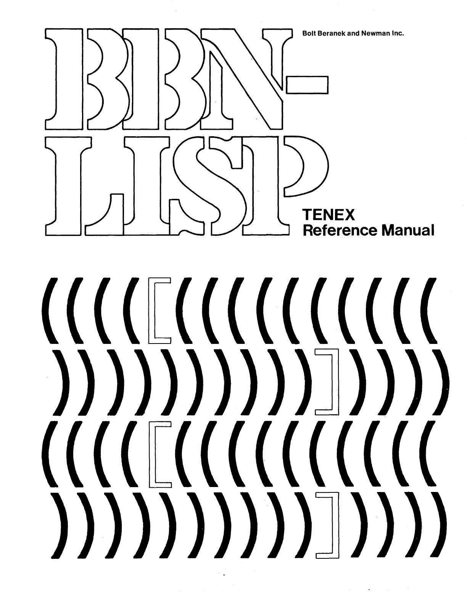
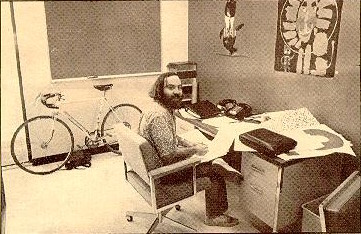
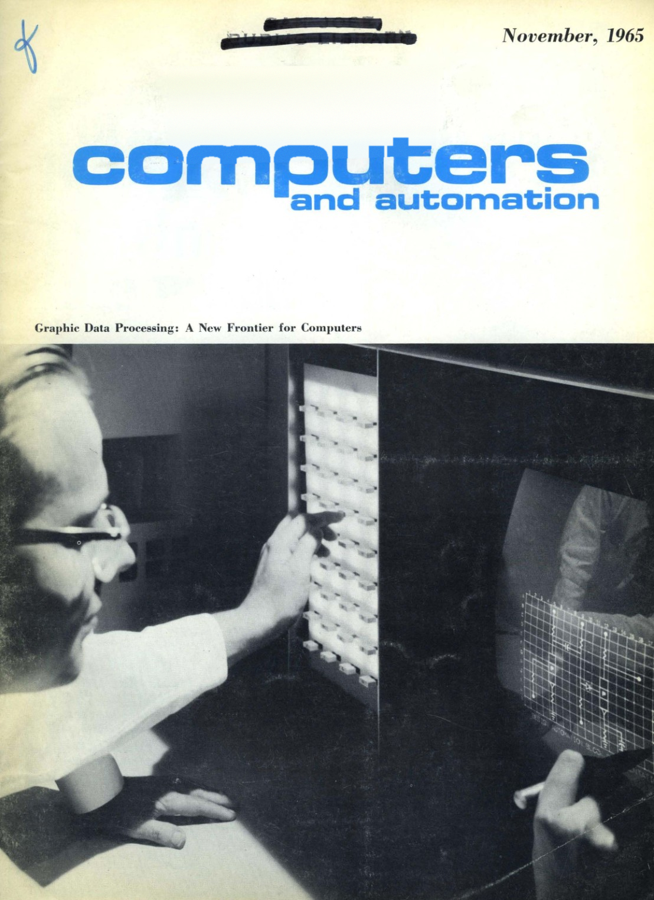
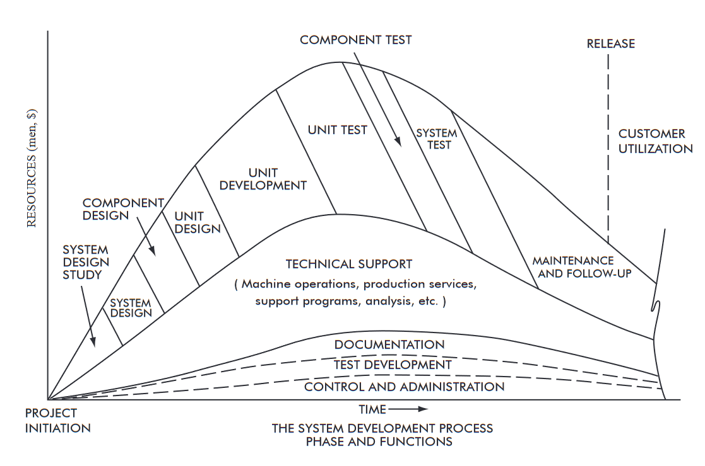

Early days of debugging and testing
Cultures of Programming — Part 9
Tomas Petricek, Charles University, Prague


Hoare's question
"Of several thousand deaths reliably attributed to computers, only ten or so can be explained by errors in the software."
Engineers seem to manage!
- Good management practices
- Testing and debugging
- Programming methodology
- Over-engineering
Debugging
Early digital computers

Analog computers
"Monetary National Income Analogue Computer"
- Internal state directly visible
- Just watch water flows...
Digital computer problems
- Non-linear effects
- No state visibility
Debugging the ENIAC
Adele [Goldstine] was an active type of programmer, trying things very quickly.
I [Betty Jean Jennings] was more laid back and given to attempting to figure out things logically before doing anything.
Lessons
Debugging the ENIAC
- Hackers still favor active approach & intuition
- Mathematical culture still favors reasoning
- Testing against manually calculated trajectory
- Reprogramming to simplify (60 order code)
- Observing the state still matters
Observing system state

BINAC (1949) connected to radio
"Al Auerbach said he’d quickly discovered that he
could tell whether the BINAC was running correctly
by the sounds coming out of the radio."
Maurice Wilkes
"The realization came over me with full force that a good part of the remainder of my life was going to be spent in finding errors in my own programs."
The Airy tape
"approximately twenty errors in the 126 lines of the program" (Campbell-Kelly)
Mechanisms
Debugging programs on the EDSAC
- Step-by-step program execution (peeping)
- Initial orders that provided subroutines
- Postmortem (memory) dump routine
- Interpretive checking routine (50x slower)

Where did the term 'bug' come from?
Not the moth attributed to Grace Hopper
Engineering term for malfunctions since 19th century
At odds with large sums spent on fixing bugs!
Debugging and testing terminology
Debugging and testing
- Making sure a program runs
- No clear distinction
Program checkout
- Going back to Turing (1949)
- Check it produces correct results
Error handling
- Not commonly used prior to 1960s
Debugging
On-line debugging techniques
MIT
Debugging on TX-0 and PDP-1
- UT-3 - Interactive program and memory editing
- FLIT - Symbolic assembly,
breakcommand - DDT - FLIT for PDP-1 (DEC Debugging Tape)
- DEBUG - Program relocation, dump new code
Debugging techniques (1966)

Typical hacker knowledge
"Much of the work in this field has been described only in unpublished reports or passed on through the oral tradition."
Low and high level
- TX and PDP tools worked with assembly
- Less existed for high-level languages
- QUICKTRAN interpreter for FORTRAN

Debugging in LISP
"With some care, it has been possible, for example, to find a bug while at a breakpoint in running a test case, call the [structure] editor to make a correction, run the program on a simpler test case to verify the correctness of the change, then resume execution of the original test case from the breakpoint."
Debugging using the BBN LISP

Follows hacker traditions!
- L Peter Deutsch, Warren Teitelman, Daniel Bobrow, D. Lucille Darley
Error handling and debugging
- \(\overline{H}\) errors with "Help on the spot"
- Trigger manually to break program
- \(H\) errors that stop all computation
- Latter handled in code using
errorset
Debugging and error handling mixed!
Debugging
The debugging epoch opens

The debugging epoch opens
(Halpern, 1965)
"We have machines big and fast enough to execute most useful programs, and software
varied and reliable enough to get those programs written;
what now? Now: debugging"
Debugging in a broad sense
NATO Software Engineering Conference (1968)

From finding bugs to industry crisis
Engineering culture overtakes hackers
Rigorous testing
- By producers to check it works
- By customers to justify paying
Mathematical culture at NATO conference
Shift from formal proofs
to development methodologies
Logical type of programmer
"There has been a very hectic trend towards development of [interactive programming systems]. Now this is certainly nice in a way, but it has its dangers ..
My worry is that the facility of quick response leads to sloppy working habits ..
detrimental to the
field as a whole." (Niklaus Wirth)
Debugging
-
xx
xxx
Cultures of Programming
Home Continue to Part 8